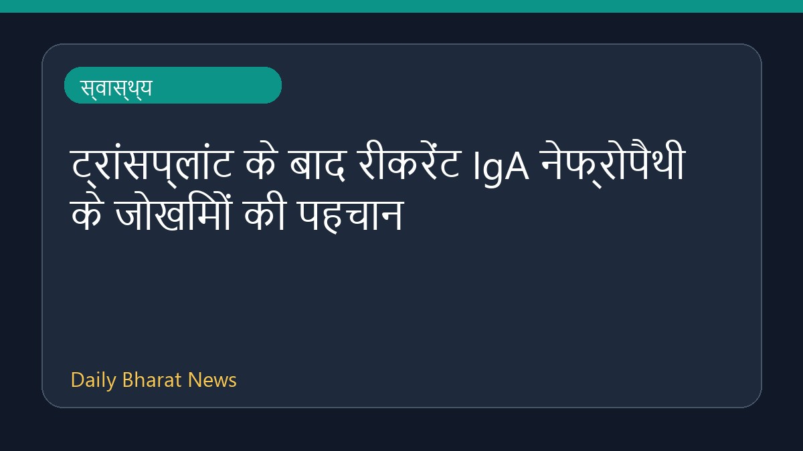

ट्रांसप्लांट के बाद रीकरेंट IgA नेफ्रोपैथी के जोखिमों की पहचान

हाल ही में स्वास्थ्य समाचार स्रोतों से प्राप्त जानकारी के अनुसार, ट्रांसप्लांटेशन के बाद रीकरेंट IgA नेफ्रोपैथी (IgA Nephropathy) से जुड़े जोखिमों की पहचान की गई है। हालांकि, इस विषय पर अभी बहुत अधिक और विस्तृत विवरण उपलब्ध नहीं हैं। ईएमजे (EMJ) की रिपोर्ट के अनुसार, इस चिकित्सीय स्थिति और इसके संभावित खतरों को समझने के लिए आगे के अध्ययनों और सीमित जानकारियों पर ध्यान केंद्रित किया गया है। वर्तमान में इस संबंध में उपलब्ध डेटा बहुत संक्षिप्त है।
मूल स्रोत: Health News Sources
Recurrent IgA Nephropathy Risks Identified After Transplantation - EMJ ↗
Recurrent IgA Nephropathy Risks Identified After Transplantation - EMJ ↗